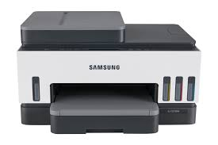
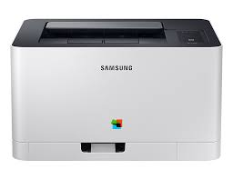
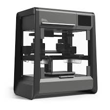

프린터는 텍스트나 이미지를 종이에 출력하기 위한 장치로, 가정이나 사무실에서 널리 사용된다. 다양한 기술을 이용해 문서, 사진, 3D 모델 등을 출력할 수 있으며, 레이저 프린터, 잉크젯 프린터, 3D 프린터 등 여러 유형이 있다.
프린터는 텍스트나 이미지를 종이에 출력하기 위한 장치로, 가정이나 사무실에서 널리 사용된다. 다양한 기술을 이용해 문서, 사진, 3D 모델 등을 출력할 수 있으며, 레이저 프린터, 잉크젯 프린터, 3D 프린터 등 여러 유형이 있다.
최초의 프린터는 19세기 초 산업 혁명 시기에 개발되었으며, 초기에는 도트 매트릭스 기술이 주로 사용되었다. 이후 잉크젯과 레이저 기술이 도입되며 품질과 속도가 크게 향상되었다.
레이저 프린터는 정전기 기술을 사용해 인쇄 품질이 높은 출력물을 생성하는 장치로, 주로 사무실에서 사용된다. 빠른 출력 속도와 대량 출력이 가능하다.
3D 프린터는 소재를 층층이 쌓아 3차원 물체를 제작하는 기술을 사용한다. 설계에서 제조까지 통합적인 제작이 가능하며, 프로토타이핑과 맞춤형 제작에 활용된다.
|  |  |  |